측량및지형공간정보산업기사 (2012-05-20 기출문제)
1과목: 응용측량
1. 원곡선으로 곡선을 설치할 때 교각 60°, 반지름 200m, 곡선시점의 위치 No. 20+12.5m 일 때 곡선종점의 위치는? (단, 중심말뚝 간의 거리는 20m 이다.)
- 821.9m
- 621.9m
- 521.9m
- 421.9m
(정답률: 45%)

2. 터널측량 중 A점에 기계를 세우고 천장의 B점에 표척을 거꾸로 세워 1.03m를 읽었다면 B점의 지반고는? (단, A점의 지반고는 10.30m, 기계고는 1.44m 이다.)
- 10.71m
- 11.33m
- 11.74m
- 12.77m
(정답률: 49%)
3. 클로소이드(clothoid)의 성질에 대한 설명으로 옳은 것은?
- 모든 clothoid는 닮은꼴이다.
- clothoid는 원의 일종이다.
- clothoid의 형은 다양한 형태를 이룬다.
- clothoid의 모든 요소는 길이의 단위를 갖는다.
(정답률: 84%)
4. 도로시점으로부터 교점(I.P.)까지의 거리가 850m이고 접선장(T.L.)이 185m인 원곡선의 시단현 길이는? (단, 중심말뚝의 간격 = 20m)
- 20m
- 15m
- 10m
- 5m
(정답률: 77%)
5. 하천측량에서 하천의 수애선을 결정하는 수위는?
- 평균평수위에 가까운 동시수위
- 저수위에 가까운 동시수위
- 고수위에 가까운 동시수위
- 갈수위에 가까운 동시수위
(정답률: 67%)
6. 완화곡선의 종류에 해당되지 않는 것은?
- 3차 포물선
- 렘니스케이트 곡선
- 2차 포물선
- 클로소이드 곡선
(정답률: 84%)
7. 하천측량에 이용되는 삼각망으로 가장 적합한 것은?
- 개방삼각망
- 유심삼각망
- 단열삼각망
- 단삼각망
(정답률: 85%)
8. 하천의 평균유속 측정법 중 2점법에 대한 설명으로 옳은 것은?
- 수면과 수저의 유속을 측정 후 평균한다.
- 수면으로부터 수심의 40%, 60% 지점의 유속을 측정 후 평균한다.
- 수면으로부터 수심의 20%, 80% 지점의 유속을 측정 후 평균한다.
- 수면으로부터 수심의 10%, 90% 지점의 유속을 측정 후 평균한다.
(정답률: 84%)
9. 하천의 유량조사는 고수위와 저수위 공사에 대한 하도(河道)를 계획하는데 필요한 조사로 관측점의 선점에 특히 주의를 요하는데 선점 시의 주의 사항에 대한 설명으로 옳지 않은 것은?
- 관측에 편리하며 무리가 없는 곳이 좋고 특히 교량의 교각 부근이 좋다.
- 유로(流路)는 편평하고 고른 곳이 좋으며, 수로가 직선이고, 항상 급한 변동이 없는 곳이좋다.
- 수위의 변화에 따라 단면의 형태가 급변하지 않는 곳이 좋다.
- 초목이나 그 외의 장해물 때문에 유속이 방해되지 않는 곳이 좋다.
(정답률: 85%)
10. 그림과 같은 다각형의 토량을 양단면평균법, 각주공식 및 중앙단면법으로 계산하여 토량의 크기를 비교한 것으로 옳은 것은? (단, A1=300m2, Am=200m2, A2=100m2이고 상호간에 평행하며 h=20m, 측면은 평면이다.)
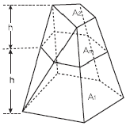
- 양단면 평균법 ＜ 각주공식 ＜ 중앙단면법
- 양단면 평균법 ＞ 각주공식 ＞ 중앙단면법
- 양단면 평균법 = 각주공식 = 중앙단면법
- 양단면 평균법 ＜ 각주공식 = 중앙단면법
(정답률: 67%)
11. 유토곡선(Mass Curve)을 작성하는 목적과 거리가 먼 것은?
- 토공기계의 선정
- 토량의 배분
- 노선의 횡단결정
- 토량의 운반거리 산출
(정답률: 63%)
12. 터널측량에 대한 설명으로 옳지 않은 것은?
- 터널 내의 곡선 설치는 일반적으로 지상에서와 같이 편각법, 중앙종거법 등을사용한다.
- 터널의 길이방향은 삼각측량 또는 트래버스 측량으로 행한다.
- 터널 내의 측량에서는 기계의 십자선 또는 표척에 대한 조명이 필요하다.
- 터널측량의 분류는 터널 외 측량, 터널 내 측량, 터널 내ㆍ외 연결측량으로 나눈다.
(정답률: 67%)
13. 경관측량에서 경관구성요소에 의하여 대상계, 경관장계, 시점계, 상호계로 구분할 때 인식의 주체가 되는 것은?
- 대상계
- 경관장계
- 시점계
- 상호계
(정답률: 64%)
14. 그림과 같은 댐 상류의 등고선에서 저수면의 높이를 140m로 한다면 저수량은? (단, 각주공식을 이용하고 바닥은 편평하다.)(오류 신고가 접수된 문제입니다. 반드시 정답과 해설을 확인하시기 바랍니다.)
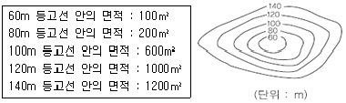
- 41467m3
- 41334m3
- 24333m3
- 20667m3
(정답률: 32%)
15. 운동장 예정부지를 측량한 결과, 5m 격자점의 표고가 그림과 같았다. 계획고를 15.0m로 할 경우의 토량은?
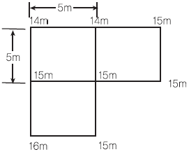
- 절토 6.25m3
- 성토 6.25m3
- 절토 12.5m3
- 성토 12.5m3
(정답률: 43%)
16. 단곡선의 각 요소를 계산하는 공식이 틀린 것은? [단, R : 반지름, I = 교각(°)]
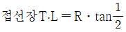
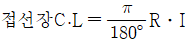
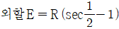
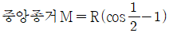
(정답률: 66%)
17. 그림과 같은 삼각형 ABC 토지의 한 변 AC 상의 점 D와 BC상의 점 E를 연결하고 직선 DE에 의해 삼각형 ABC 의 면적을 이등분 하고자 할 때의 CE의 길이는? (단, AB=40m, AC=75m, BC=70m, AD=8m)
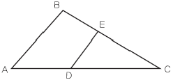
- 36.15m
- 39.18m
- 41.15m
- 45.18m
(정답률: 60%)
18. 한 개의 수직터널에 의한 터널 내ㆍ외 연결측량의 설명으로 옳지 않은 것은?
- 수직터널에 2개의 추를 매달아 연직면을 정한다.
- 방위각은 지상에서 관측하여 지하측량으로 연결한다.
- 수직터널의 바닥에는 물 또는 기름을 넣은 탱크를 설치하고 그 속에 추를 넣어 진동하는 것을 방지한다.
- 추는 얕은 수직터널은 피아노선, 깊은 수직 터널에서는 철선, 강선, 황동선 등을 주로 사용한다.
(정답률: 50%)
19. 그림과 같은 사각형 ABCD의 면적은? (단, 단위는 m)
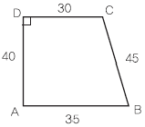
- 1361.85m2
- 1362.85m2
- 1363.85m2
- 1364.85m2
(정답률: 42%)
20. 댐 건설을 위한 조사측량에서 댐 사이트의 평면도 작성 방법으로 가장 적당한 것은?
- 평판측량
- 평판측량과 시거측량의 병용
- 지상사진측량 또는 항공사진측량
- 스타디아측량 사진측량 및 원격탐사
(정답률: 92%)
2과목: 사진측량 및 원격탐사
21. 수치영상의 정합기법 중 하나인 영역기준정합의 단점이 아닌 것은?
- 불연속 표면에 대한 처리가 어렵다.
- 계산량이 많아서 시간이 많이 소요된다.
- 선형 경계를 따라서 중복된 정합점들이 발견될 수 있다.
- 주변 픽셀들의 밝기값 차이가 뚜렷한 경우 영상정합이 어렵다.
(정답률: 74%)
22. 촬영고도 3000m인 밀착사진이 있다. 이 사진에서 비고 580m에 대한 시차차의 크기는? (단, 초점거리 15㎝, 사진크기 23㎝×23㎝, 사진의 종중복도 60%이다.)
- 12㎜
- 15㎜
- 18㎜
- 20㎜
(정답률: 60%)
23. 사진 상에 찍혀있는 삼각점 A,B 두 점간의 거리를 측정하였더니 9.0㎝이고, 축척 1:25000의 지도 상에서는 3.6㎝ 이었다면 촬영고도는? (단, 카메라의 초점거리는 15㎝, 사진크기는 23㎝×23㎝이다.)
- 1400m
- 1500m
- 1600m
- 1700m
(정답률: 59%)
24. 원격탐사에 대한 설명으로 옳지 않은 것은?
- 원격탐사 자료는 물체의 반사 또는 방사의 스펙트럼 특성에 의존한다.
- 자료 수집 장비로는 수동적 센서와 능동적 센서가 있으며 Laser 거리관측기는 수동적 센서로 분류된다.
- 자료의 양은 대단히 많으며 불필요한 자료가 포함되어 있을 수 있다.
- 탐측된 자료가 즉시 이용될 수 있으며 재해 및 환경 문제 해결에 편리하다.
(정답률: 58%)
25. 영상처리 내용 중 방사보정(radiometric corrections)에 해당되지 않는 것은?
- 대기의 산란광 영향 보정
- 기복변위에 의한 왜곡 보정
- 영상자료의 줄무늬 현상 보정
- 태양고도각의 차이에 의한 영향 보정
(정답률: 69%)
26. 수치사진 측량의 장점에 대한 설명으로 옳지 않은 것은?
- 사진에 나타나지 않은 지형지물의 판독이 가능하다.
- 다양한 결과물의 생성이 가능하다.
- 자동화에 의해 효율성이 증가한다.
- 작업비용이 절감된다.
(정답률: 65%)
27. SAR(Synthetic Aperture Radar)영상의 특징이 아닌 것은?
- 태양광에 의존하지 않아 밤에도 영상의 촬영이 가능하다.
- 구름이 대기 중에 존재하더라도 영상을 취득할 수 있다.
- 마이크로웨이브를 이용하여 영상을 취득한다.
- 중심투영으로 영상을 취득하기 때문에 영상에서 발생하는 왜곡이 광학영상과 비슷하다.
(정답률: 77%)
28. 지형도, 항공사진을 이용하여 대상지의 3차원 좌표를 취득하여 불규칙한 지형을 기하학적으로 재현하고 수치적으로 해석하므로 경관해석, 노선선정, 택지조성, 환경설계 등에 이용되는 것은?
- 원격탐사
- 도시정보체계
- 수치정사사진
- 수치지형모델
(정답률: 80%)
29. 촬영고도 700m에서 촬영한 사진 상에 나타난 철탑의 상단부분이 사진의 주점으로부터 6㎝ 떨어져 있으며, 철탑의 변위가 5㎜로 나타날 때 이 철탑의 높이는?
- 40.0m
- 58.3m
- 61.3m
- 92.5m
(정답률: 78%)
30. 다음 중 지리정보자료를 메타데이터로 가지는 정사투영영상을 저장할 수 없는 영상포맷은?
- GeoTIFF
- GeoJpeg
- Erdas IMG
- photoshop PSD
(정답률: 58%)
31. 항공사진측량에서 주로 이용되는 사진은?
- 거의 수직사진
- 파노라마사진
- 수렴 수평사진
- 저각도 경사사진
(정답률: 71%)
32. 해석적 상호표정을 수행할 때 필요한 최소한의 관측방정식의 갯수는?
- 5
- 6
- 7
- 8
(정답률: 73%)
33. 대공표지에 관한 설명으로 틀린 것은?
- 대공표지의 재료로는 합판, 알루미늄, 합성수지, 직물 등으로 내구성이 강하여 후속작업이 완료될 때까지 보존될 수 있어야 한다.
- 대공표지는 항공사진에 표정용 기준점의 위치를 정확하게 표시하기 위하여 촬영 전에 설치한 표지를 말한다.
- 대공표지의 설치장소는 상공에서 보았을 때 30°정도의 시계를 확보할 수 있어야 한다.
- 지상에 적당한 장소가 없을 때에는 수목 또는 지붕 위에 설치할 수도 있다.
(정답률: 77%)
34. 항공사진측량에서 항공기에 GPS(위성측위시스템)수신기를 탑재하여 촬영할 경우에 GPS로부터 얻을 수 있는 정보는?
- 내부표정요소
- 상호표정요소
- 절대표정요소
- 외부표정요소
(정답률: 62%)
35. 사진측량의 모델에 대한 정의로 옳은 것은?
- 편위수정된 사진이다.
- 한 장의 사진에 찍힌 면적이다.
- 촬영 지역을 대표하는 사진이다.
- 중복된 한 쌍의 사진으로 입체시 할 수 있는 부분이다.
(정답률: 75%)
36. 위성이나 항공기 등에서 취득하는 원격탐사 자료는 여러가지 원인에 따른 기하학적 오차를 내포하고 있다. 이 중 위성이나 항공기 자체의 기계적인 오차도 포함되는데 이러한 기계적인 오차를 유발하는 원인이 아닌 것은?
- 광학시스템 상의 오차
- 비선형 스캐닝 메커니즘에 의한 오차
- 불균일 촬영속도에 의한 오차
- 지구자전 속도에 따른 오차
(정답률: 73%)
37. 사진 판독의 기본 요소가 아닌 것은?
- 색조
- 질감
- 고도
- 형상
(정답률: 70%)
38. 그림은 측량용 항공사진기의 방사렌즈 왜곡을 나타내고 있다. 사진좌표가 x=3㎝, y=4㎝인 점에서 왜곡량은? (단, 주점의 사진좌표는 x=0, y=0 이다.)
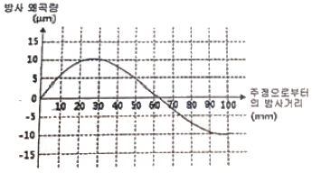
- 주점 방향으로 5㎛
- 주점 방향으로 10㎛
- 주점 반대방향으로 5㎛
- 주점 반대방향으로 10㎛
(정답률: 75%)
39. 다음의 수치표고모델(DEM) 중 데이터의 구조가 가장 간단한 것은?
- 불규칙 삼각망(TIN)
- 격자형(grid)
- 점진형(progressive)
- 복합형(hybrid)
(정답률: 79%)
40. 항공사진 촬영시 종중복촬영을 할 때 사각부분을 제거하기 위한 방법이 아닌 것은?
- 기선고도비를 크게 한다.
- 종중복도를 10~20%정도 증가시킨다.
- 기선길이를 작게 하여 더 많이 촬영한다.
- 같은 기선길이 상태에서 촬영고도를 높인다. 지리정보시스템(GIS) 및 위성측위시스템(GPS)
(정답률: 40%)
3과목: GIS 및 GPS
41. GIS 분석기능 중 대상물간의 연결 관계를 평가하는 기능은?
- 인접기능(Neighborhood function)
- 중첩기능(Overlay function)
- 연결기능(Connectivity function)
- 측정, 검색, 분류기능(measurement, query, classification)
(정답률: 75%)
42. 위상관계(Topological Relationship)의 유형이 아닌 것은?
- 무결성(integrity)
- 인접성(proximity)
- 포함관계(containment)
- 연결성(connectivity)
(정답률: 71%)
43. 지리정보시스템의 자료취득 방법과 가장 거리가 먼 것은?
- 투영법에 의한 자료취득 방법
- 항공사진측량에 의한 방법
- 일반측량에 의한 방법
- 원격탐사에 의한 방법
(정답률: 69%)
44. GIS의 구현과 운용과정에 있어서 필요한 주요 학문분야로 가장 거리가 먼 것은?
- 지도/지리학
- 역사학
- 측량/측지학
- 전산학
(정답률: 89%)
45. GPS(Global Positioning System)의 활용분야와 가장 거리가 먼 것은?
- 영상복원
- 변위량보정
- 상대좌표해석
- 절대좌표해석
(정답률: 82%)
46. 다음 중 건물(Building) 쉐이프(Shape) 파일을 구성하고 있는 부분 파일이 아닌 것은?
- Building.shx
- Building.mdb
- Building.dbf
- Building.shp
(정답률: 61%)
47. GPS 위성신호 L1 및 L2의 주파수는 각각 f1=1575.42MHz, f2 = 1227.60MHz 이다. 광속(c)을 약 300000㎞/sec 라고 할 때, wide lane(Lw=L1-L2) 인공주파수의 파장은 약 얼마인가?
- 0.86m
- 0.24m
- 0.19m
- 0.11m
(정답률: 40%)
48. 지리정보시스템에 이용되는 GIS 소프트웨어의 모듈기능이 아닌 것은?
- 자료의 출력
- 자료의 입력과 확인
- 자료의 저장과 데이터베이스 관리
- 자료를 전송하기 위한 전화선으로 구성된 네트워크 시스템
(정답률: 64%)
49. 벡터 데이터 모델은 기본적인 도형의 요소(geometric primitive type)로 공간 객체를 표현한다. 다음 중 국토지리정보원에서 제작한 수치지도 v 2.0의 내부 포맷 NGI에서 사용하는 기본적인 도형의 요소인 것은?
- 점
- 점, 선
- 선,면
- 점, 선, 면
(정답률: 91%)
50. A 측점에 대한 GPS 관측결과, GRS80 타원체고가 123.456m, 지오이드고가 -23.456m 이었다면 지오이드면에서 A점까지의 높이는?
- 76.544m
- 100.000m
- 146.912m
- 170.368m
(정답률: 84%)
51. 수치고도모델(DEM)을 통하여 분석할 수 없는 것은?
- 경사도와 사면방향
- 지형단면과 굴곡도
- 토지이용
- 가시권
(정답률: 85%)
52. DOP(Dilution of Precision)에 대한 설명으로 틀린 것은?
- 위성관측에 좋은 조건에서는 나쁜 조건에 비해 DOP값이 작다.
- DOP는 시간과는 무관한 위치, 높이의 함수로 표현된다.
- DOP값은 수신기들의 위치와 수신기의 시계오차를 계산하여 구할 수 있다.
- DOP는 위성의 기하학적 배치상태가 정밀도 에 어떻게 영향을 주는가를 추정할 수 있는 척도이다.
(정답률: 39%)
53. 래스터 자료 저장 구조 중 아래 그림과 같은 저장방법은?
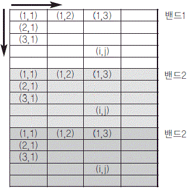
- BIL(Band interleaved by Line)
- BSQ(Band SeQuencal)
- BIP(Band Interleaved by Pixel)
- GeoTiff
(정답률: 69%)
54. 자원정보체계(RIS:resources information system)에 대한 설명으로 옳은 것은?
- 수치지형모형, 전산도형해석기법과 조경, 경관요소 및 계획대안을 고려한 다양한 모의관측을 통하여 최적 경관계획안을 수립하는 정보체계
- 대기오염정보, 수질오염정보, 고형폐기물처리정보, 유해폐기물 등의 위치 및 특성과 관련된 전산정보체계
- 농산자원, 삼림자원, 수자원, 지하자원 등의 위치, 크기, 양 및 특성과 관련된 정보체계
- 수계특성, 유출특성 추출 및 강우빈도와 강우량을 고려한 홍수방재체제 수립, 지진방재체제 수립, 민방공체제구축, 산불방재대책 등의 수립에 필요한 정보체계
(정답률: 86%)
55. 메타 데이터의 요소 중 데이터의 제목, 지리적 범위, 제작일 등을 나타내는 것은?
- 식별정보
- 품질정보
- 공간정보
- 속성정보
(정답률: 41%)
56. 래스터(또는 그리드) 저장 기법 중 셀 값을 개별적으로 저장하는 대신 각각의 변 진행에 대하여 속성값, 위치, 길이를 한 번씩만 저장하는 방법은?
- 사지수형 기법
- 블록 코드 기법
- 체인 코드 기법
- Run-length 코드 기법
(정답률: 60%)
57. TIN의 구성요소가 아닌 것은?
- 경계(edges)
- 절점(vertices)
- 평면 삼각면(faces)
- 브레이크라인(breaklines)
(정답률: 73%)
58. 2차원 벡터 자료와 래스터 자료를 비교 설명한 것으로 옳지 않은 것은?
- 래스터 자료 구조가 단순함
- 래스터 자료는 환경 분석에 용이함
- 벡터 자료는 객체의 정확한 경계선 표현이 용이함
- 래스터 자료도 벡터 자료와 같이 위상을 가질 수 있음
(정답률: 73%)
59. 공공시설물이나 대규모의 공장, 관로망 등에 대한 지도 및 도면 등 제반정보를 수치 입력하여 시설물에 대한 효율적인 운영관리를 하는 종합적인 관리체계를 무엇이라 하는가?
- CAD/CAM
- A.M.(Automatic Mapping)
- F.M.(Facility Mapping)
- S.I.S.(Surveying Information System)
(정답률: 95%)
60. 도시 계획 및 관리 분야에서의 GIS 활용 사례가 아닌 것은?
- 개발가능지 분석
- 토지이용변화 분석
- 지역기반마케팅 분석
- 경관분석 및 경관계획측량학
(정답률: 80%)
4과목: 측량학
61. 100m2인 정사각형의 토지를 0.1m2까지 정확히 구하기 위하여 요구되는 1변의 길이는 어느 정도까지 정확하게 관측하여야 하는가?
- 4㎜
- 5㎜
- 10㎜
- 12㎜
(정답률: 65%)
62. 어떤 기선을 관측하여 표와 같은 결과를 얻었다면 최확값은?
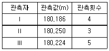
- 180.125m
- 180.218m
- 180.220m
- 180.815m
(정답률: 71%)
63. 표준길이 30m에 대하여 6㎜ 늘어난 줄자로 정사각형의 지역을 관측한 결과 62500m2를 얻었다면 실제 면적은?
- 62475m2
- 62490m2
- 62515m2
- 62525m2
(정답률: 44%)
64. 레이저(laser) 스캐닝 체계를 이용하여 대상물의 3차원 위치를 결정하는 과정을 순서대로 나열한 것은?
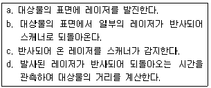
- a-b-c-d
- a-c-b-d
- c-a-b-d
- d-a-b-c
(정답률: 90%)
65. 수준측량의 오차 중 개인오차에 해당되는 것은?
- 시차에 의한 오차
- 대기굴절에 의한 오차
- 지구곡률에 의한 오차
- 태양의 직사광선에 의한 오차
(정답률: 67%)
66. WGS84 타원체의 적도반경(장축)이 약 6378.137㎞이고, 편평률은 약 1/298.257이라면 극반경(단축)은?
- 6079.882㎞
- 6273.125㎞
- 6356.752㎞
- 6399.524㎞
(정답률: 60%)
67. 트래버스측량의 방위각법에 관한 설명으로 틀린 것은?
- 방위각법은 각 관측선이 일정한 기준선과 이루는 각을 반시계방향으로 관측하는 방법이다.
- 진북방향과 관측선이 이루는 각을 방위각이라 한다.
- 임의 기준선의 방향과 관측선의 방향 사이의 수평각을 시계방향으로 관측한 각을 방향각이라 한다.
- 진북은 일반적으로 관측이 용이하지 않으므로 자침에 의한 북을 기준으로 할 때가 많다.
(정답률: 40%)
68. 폭이 좁고 거리가 먼 지역에 적합하여 하천측량, 노선측량, 터널측량 등에 이용되는 삼각망은?
- 방산식 삼각망
- 단열 삼각망
- 복열식 삼각망
- 직교 삼각망
(정답률: 85%)
69. 전자기파 거리측량기에 의한 거리측량에서 거리의 크기에 비례하여 영향을 주는 오차는?
- 공기 굴절률의 오차
- 위상차 관측의 오차
- 기계 상수의 오차
- 반사경 상수의 오차
(정답률: 43%)
70. 그림과 같이 A, B, C 3개 수준점에서 직접수준측량에 의해 P점을 관측한 결과가 다음과 같을 때, P점의 최확값은?
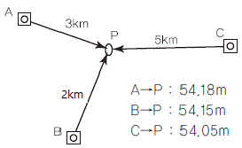
- 54.10m
- 54.13m
- 54.14m
- 54.15m
(정답률: 36%)
71. 하천, 항만측량에 많이 이용되는 지형표시 방법으로 표고를 숫자로 도상에 나타내는 방법은?
- 음영법
- 등고선법
- 점고법
- 채색법
(정답률: 75%)
72. 삼각망 조정을 위하여 만족되어야 하는 3가지 조건이 아닌 것은?
- 하나의 관측점 주위에 있는 모든 각의 합은 360°가 되어야 한다.
- 삼각망을 구성하는 각각의 변은 서로 교차하지 않아야 한다.
- 삼각망 중 각각의 삼각형 내각의 합은 180°가 되어야 한다.
- 삼각망 중에서 임의 한 변의 길이는 계산의 순서에 관계없이 일정하여야 한다.
(정답률: 64%)
73. 어떤 측량장비의 망원경에 부착된 수준기기포관의 감도를 결정하기 위해서 D=50m떨어진 곳에 표척을 수직으로 세우고 수준기의 기포를 중앙에 맞춘 후 읽은 표척 눈금값이 1.00m이고, 망원경을 약간 기울여 기포관상의 눈금 n=5개 이동된 상태에서 측정한 표척의 눈금이 1.03m 이었다면 이 기포관의 감도는?
- 약 15"
- 약 20"
- 약 25"
- 약 35"
(정답률: 31%)
74. 측점의 좌표값이 A(-30,-40), B(60,-80), C(40,20)일 때 측선 CB의 방위는? (단, 좌표의 단위는 m이다.)
- N 281°18、36" E
- S 101°18、36" E
- S 171°41、24" W
- N 78°41、24" W
(정답률: 20%)
75. 공공측량의 실시공고에 포함되어야 할 사항이 아닌 것은?
- 측량의 종류
- 측량의 목적
- 측량의 규모
- 측량의 실시기간
(정답률: 67%)
76. 기본측량성과의 고시에 포함되어야 할 사항이 아닌 것은?
- 측량실시의 시기 및 지역
- 측량성과의 보관 장소
- 설치한 측량기준점의 수
- 측량 실시자의 연혁
(정답률: 50%)
77. 측량기준점을 크게 3가지로 구분할 때, 그 분류로 옳은 것은?
- 삼각점, 수준점, 지적점
- 위성기준점, 수준점, 삼각점
- 국가기준점, 공공기준점, 일반기준점
- 국가기준점, 공공기준점, 지적기준점
(정답률: 90%)
78. 아래와 같이 정의되는 측량은?
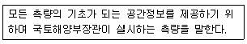
- 지적측량
- 공공측량
- 기본측량
- 수로측량
(정답률: 85%)
79. 지도도식규칙에 의하여 지도의 외도곽 바깥쪽에 표시되는 것은?
- 도엽번호
- 지형
- 행정구역경계
- 지명
(정답률: 60%)
80. 측량기기와 성능검사 주기가 옳게 짝지어진 것은?
- 레벨 - 1년
- 토털 스테이션 - 2년
- GPS 수신기 - 2년
- 금속관로 탐지기 -3년
(정답률: 85%)
따라서, 곡선시점의 위치 No. 20+12.5m에서 곡선종점까지의 거리는 418.88m - 12.5m = 406.38m 이다.
중심말뚝 간의 거리가 20m이므로, 곡선종점의 위치는 20m 더 이동한 406.38m + 20m = 426.38m 이다.
하지만, 이는 곡선시점에서부터의 거리이므로, No. 20+12.5m에서부터의 거리를 더해줘야 한다. 따라서, 곡선종점의 위치는 426.38m + 20+12.5m = 458.88m 이다.
하지만, 이는 곡선종점까지의 거리이므로, No. 1+000m에서부터의 거리를 더해줘야 한다. 따라서, 곡선종점의 위치는 1+000m + 458.88m = 1+458.88m 이다.
하지만, 이는 1km 이상이므로, 천의 자리에 1을 더해줘야 한다. 따라서, 곡선종점의 위치는 2+458.88m = 2+458.9m ≈ 621.9m 이다.